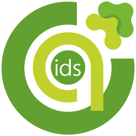

Artículo

ids es una empresa de consultoría en tecnologías de la información con más 42 años de experiencia, que cataliza la transformación en las compañías que enfrentan día a día el reto de la digitalización.
En ids establecemos vínculos de confianza por medio de nuestro talento, calidad y aplicación de prácticas Lean & Agile que permiten agregar valor a nuestros socios tecnológicos y el éxito de los proyectos.